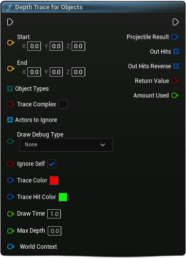

title: lit.ruv.wtf - Blueprint Penetration Trace Documentationlit.ruv.wtf - Blueprint Penetration Trace Documentation
This is a Blueprint Function Library with a few functions that are callable in AActors to do depth trace results, for use in things like projectiles and tools.
Features
- Depth-based trace
- Forward and backward trace results for bullet holes
- Simple to implement into existing systems
- Easy debug options
How it works
This node works by simulating depth using two line traces—one forward and one backward from the point of impact. These traces scan for objects in their paths and gather information about the hit results. The distance travelled through each material is multiplied by its density (defined in the material's physical properties), which determines how much the projectile is slowed down or whether it stops entirely. Finally, the node returns a list of hit results, including the total depth.
Variants
Depth Trace by Channel

Depth Trace for Objects

Depth Trace by Profile

Input
| Member | Definition |
|---|---|
| Start | Start of the Trace |
| End | End of the Trace |
| Trace Complex | If the trace will use Complex Collision |
| Actors To Ignore | Array of Actors, to ignore while tracing |
| Draw Debug Type | Draw Debug Arrows over Time, or Persistently |
| Ignore Self | If the traces should ignore the Current actor (Self) |
| Trace Color | The color of the trace, when it's not going through anything. |
| Trace Hit Color | The color of the trace, when it's going through something. |
| Draw Time | Amount of time to draw debug lines (if not persistent) |
| Max Depth | Maximum depth for the trace to go |
Implementing into existing systems
This can be seamlessly integrated with existing systems with minimal changes to your current blueprint setup.
By simply replacing your current line trace nodes with the Depth Trace node, you’ll get the added benefit of depth effects.
Adding Trace Collision Channel (optional)
While adding a custom collision channel is optional, it can be a bit more time-consuming and may cause other systems in your project to break if not set up correctly. By default, your existing channels might not be set to overlap, so setting up a new custom trace channel helps ensure compatibility.
To set up a custom trace channel in Unreal Engine, follow these steps:
- Go to Project Settings → Engine → Collision.
- In the Collision Channels section, click Add New.
- Set the following properties for the new channel:
- Name:
Projectile(or a name of your choice) - Default Response:
Overlap
- Name:
For more detailed instructions on adding a custom object type to your project, you can refer to the Unreal Engine Wiki on Custom Object Types.
Physical materials (optional)
Default Physical Material properties are at 1 g/cm, but adding more physical properties into your game can add extra depth.
Example Material Densities
| Material | Density (g/cm³) |
|---|---|
| Styrofoam | 0.1 |
| Pine Wood | 0.5 |
| Water | 0.5 |
| Glass | 1 |
| Concrete | 2.4 |
| Aluminum | 2.7 |
| Iron/Steel | 7.8 |
| Copper | 8.9 |
| Lead | 11.3 |
Acknowledgements
- loafbrr_1 for the pistol model
- Neil Francis for the target image